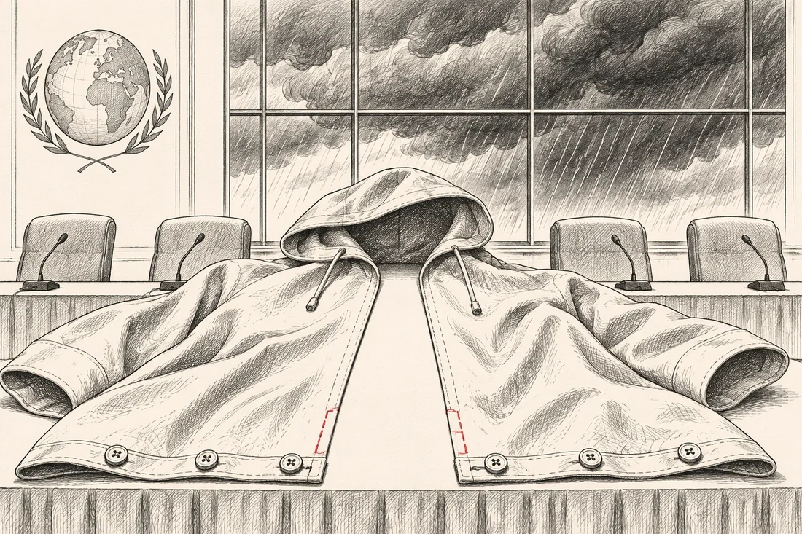

Timkrönikan
Nycklarna och den tomma stolen
När Agenda började kl. 21.15 fick kvällens bud i regeringsförhandlingarna sitt försvar i direktsändning. Mikael Damberg (S) sa att Socialdemokraterna, …
Explorations / Löpande arkiv
Två serier med illustrerade inlägg: Timkrönikan och Halvtimmen.
Alla krönikor · 2 inlägg
Timkrönikan
När Agenda började kl. 21.15 fick kvällens bud i regeringsförhandlingarna sitt försvar i direktsändning. Mikael Damberg (S) sa att Socialdemokraterna, …

Timkrönikan
Antalyas klimatmöte hade redan stängt när Associated Press kl. 20.08 svensk tid samlade deltagarnas förklaringar till varför det inte blev något …